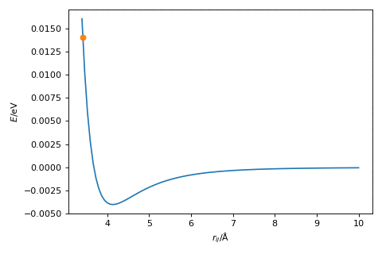

Gradient descent¶
The first algorithm that we will investigate considers only the gradient of the function and changes the reaction parameter based on this. Therefore we must define two functions, one for the energy of the potential energy surface (the Lennard-Jones potential outlined earlier) and another for the gradient of the potential energy surface (this is the first derivative of the Lennard-Jones potential). The function for the gradient of the potential energy surface is given below.
where the parameters are the same as outlined previously.
Considering the shape of the potential energy surface,
import numpy as np
import matplotlib.pyplot as plt
A = 1e5
B = 40
r = np.linspace(3.5, 10, 100)
plt.plot(r, A / (r ** 12) - B / (r ** 6))
plt.xlabel('$r_{ij}$/Å')
plt.ylabel('$E$/eV')
plt.show()
When the gradient is positive, where \(r_{ij} > 4.1\) Å, then we want to reduce the value of \(r_{ij}\), such that we go downhill towards the minimum. Where the gradient is negative, \(r_{ij} < 4.1\) Å, the value of \(r_{ij}\) needs to increase to move towards the minimum. This gives rise to the following algorithm,
An initial guess of the minimum energy distance is made
The first derivative of the energy at that distance is calculated
The distance is updated based on the following relationship,
\[ r_{\text{new}} = r_{\text{old}} - \alpha E'(r_{\text{old}}), \]where, \(E'(r)\) is the first derivative of the energy, \(r_{\text{old}}\) is the original distance, and \(\alpha\) is a hyperparameter.
Go to step 2.
The hyperparameter, \(\alpha\), is a variable that we need to find for our given optimisation, which scales the magnitude of the change in \(r\). The figure below shows the gradient descent method in action, where \(\alpha = 2.0\).

Exercise:¶
Implement a gradient descent algorithm by writing a function for the first derivative of the energy. Using a loop, iterate the algorithm at least 30 times. Test different starting points, values of \(\alpha\), and numbers of iterations, by printing the distance \(r_{ij}\) for each iteration of the loop watch for the value converging. Use \(A\) = \(1\times 10^{5}\) eVÅ12, \(B\) = \(40\) eVÅ6.